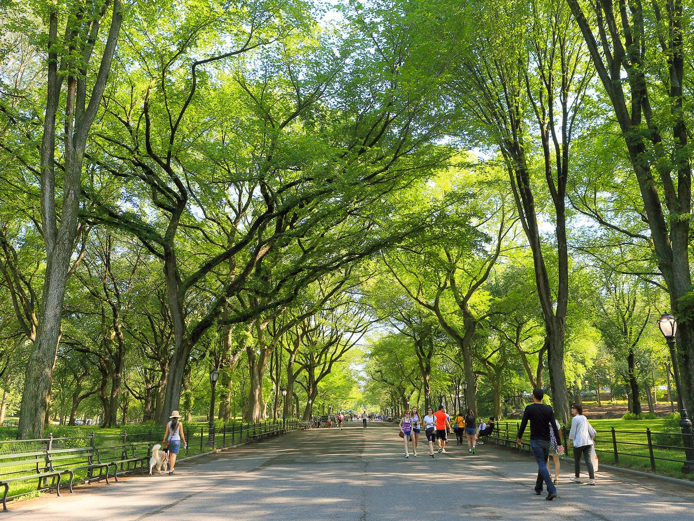
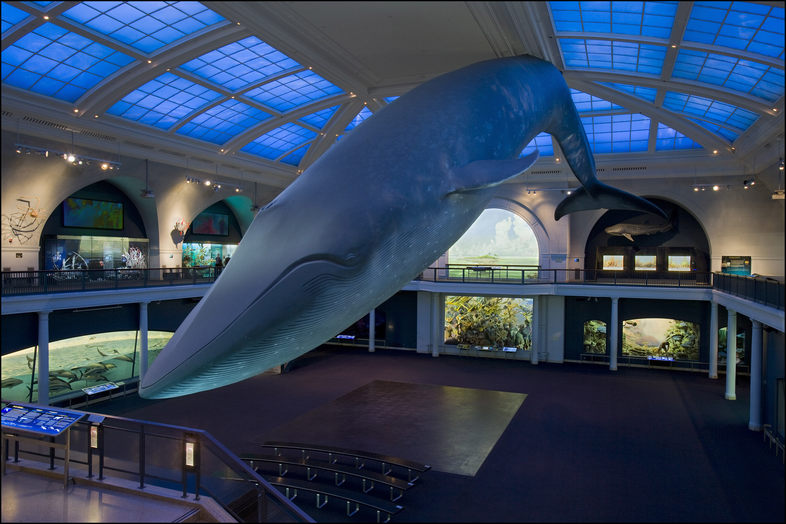
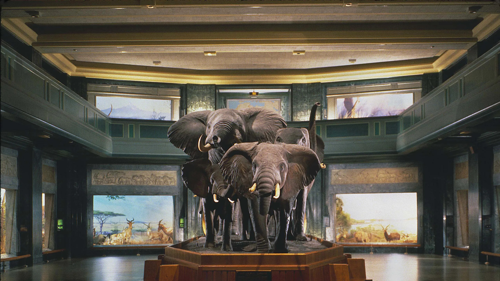
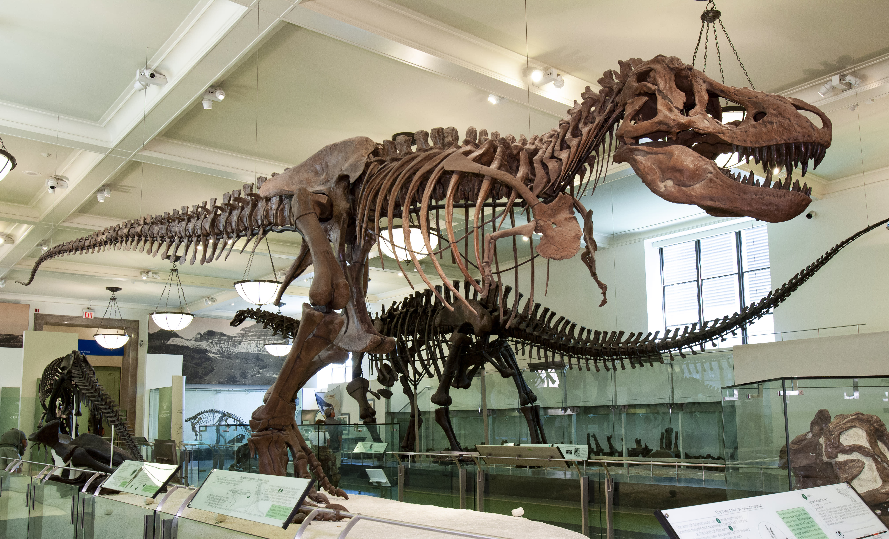

Em uma noite paulistana, estávamos nós em frente ao portão de embarque. Nosso voo saía às 23 e o avião já estava sendo preparado. O aeroporto de Guarulhos testemunhava o início da nossa jornada em direção ao sonho que tanto acalentávamos: Nova York. O aviso soou e o embarque começou. Eu estava ansioso por ver como era um Boeing 777 por dentro, já que eu tinha admirado aquela maravilha pelas janelas do saguão. Não demorou muito e a gente caminhou pela passarela que nos ligava ao avião. As nossas poltronas eram a 20J e a 20K (sim, somos pobres e ficamos na Economy). Poucos minutos depois, o avião acelerava na pista de decolagem.
Capítulo 1
A bordo do avião, enquanto sobrevoávamos os vastos oceanos que nos separavam do nosso destino, trocávamos olhares repletos de expectativas e sorrisos cúmplices. Queríamos conhecer tanta coisa por lá. Era como se cada quilômetro percorrido fosse um passo mais próximo da realização do nosso conto de fadas particular. Fizemos uma refeição principal a bordo e comemos um lanche. 9 horas depois, o sol visto dos EUA já estava presente inteiramente no avião.
Ao pousarmos no Aeroporto Internacional John F. Kennedy, a atmosfera elétrica da cidade que nunca dorme já se fazia sentir. A agitação, as luzes intensas e o som característico da metrópole norte-americana nos recepcionavam calorosamente. Ali foi nosso primeiro contato em um solo internacional. A temperatura estava meio baixa, mas como escolhemos ir em Maio, o clima era de primavera-verão. A primeira coisa mais estranha foi ouvir inglês de todos os lados. A gente tinha feito uma prática juntos durante umas semanas, então falar inglês não foi um problema. Depois de passar por toda a burocracia do aeroporto, finalmente pudemos ir a um Starbucks tomar um café. Decidimos que não íamos comprar nada além disso no aeroporto para economizar no dinheiro, mas mesmo assim o trajeto até sair dele vímos diversas lojas e culturas diferentes. Pedimos um táxi até o Park Hyatt.
No trajeto do aeroporto até o hotel, a grandeza de Nova York se desdobrava diante de nossos olhos, com seus arranha-céus imponentes e a energia vibrante que preenchia cada rua. O grandioso Empire State Building furava o céu à distância. O táxi cruzava a cidade como se fosse o tapete mágico que nos conduzia ao início de nossa jornada romântica.
Finalmente, chegamos ao nosso refúgio temporário, um hotel que exalava elegância e conforto. O lobby acolhedor nos recebia com uma mistura de luxo e hospitalidade. Foram poucas trocas de palavras com o balcão e já nos encaminhamos para o quarto. A vista panorâmica da cidade se desenhava diante de nós, anunciando que estávamos prestes a viver dias inesquecíveis. Estendemos algumas de nossas roupas no cabide para desamassar, só que como sempre a gente interrompeu o que tava fazendo para cair na cama um em cima do outro. De uma simples pegação, tudo ficou mais intenso. Ficamos nos beijando por alguns minutos, instigando um ao outro, mas como existia uma mega cidade nos esperando, decidimos guardar pra mais tarde aquilo que ansiava sair de nós.

O quarto, com sua decoração cuidadosamente escolhida, tornou-se nosso santuário pessoal em meio ao caos urbano. Da janela, podíamos vislumbrar a grandiosidade de Nova York e sentir a pulsação constante que caracteriza essa cidade cosmopolita. Tinha mesa e outras mordomias para caso fosse necessário eu usar meu notebook.
Após uma breve pausa para nos acomodarmos, decidimos explorar as ruas animadas de Manhattan. Nosso primeiro destino estava do outro lado da rua. Caminhamos de mãos dadas pelo Central Park, onde o verde exuberante contrastava com a selva de concreto que o cercava. Cada passo era uma descoberta, e cada sorriso trocado fortalecia ainda mais a certeza de que estávamos prestes a viver algo extraordinário. Passeamos durante bons minutos e quando percebemos a proximidade do almoço, fomos buscar um lugar para almoçar.
Escolhemos o primeiro restaurante que vimos por perto ao lado do Central Park e fomos ver o cardápio, que de primeira já foi o suficiente. Almoçamos tranquilamente e continuamos nossa jornada.

Você tirava fotos e mais fotos, registrando tudo que via pela frente no maravilhoso parque. Muitos dogs e pessoas passavam por nós, muitos turistas de diversas regiões do planeta. Clima ameno, mas um dia bom para explorar. Após mais alguns momentos de descontração e beijos, paramos mais ou menos no meio do Central Park para um destino que eu queria visitar: o Museu Americano de História Natural.
A belíssima fachada no estilo antigo e as árvores do jardim já evidenciavam o Museu, visto de longe. Uma fila nos aguardava, mas a gente ao menos não tev que adquirir os ingressos lá mesmo, pois já foram comprados anteriormente. Com diversos animais e muito texto, nós passamos uma e meia hora navegando lá dentro e escutando os guias e as apresentações. Além disso, conhecemos a história de alguns povos indígenas, diversos minerais e rochas.



Saindo de lá, seguimos pelo Central Park a pé e 30 minutos depois estávamos em frente à Catedral de São João, com sua arquitetura elegante, mas nosso destino era outro. Queria passar em frente à Universidade de Columbia. O lugar era lindo, os prédios antigos mas imponentes. A gente passou onde a gente podia entrar e tiramos fotos. Lá parecia um bom lugar para estudar. Não ficamos muito tempo pois ainda queríamos visitar um lugar antes de voltar para o hotel.
Após solicitar transporte, deixamos a Columbia University em direção ao Jardim Botânico de Nova York. O percurso atravessou ruas arborizadas, revelando a diversidade arquitetônica da cidade. Chegando ao destino, deparamo-nos com o Jardim Botânico, um refúgio verdejante no coração da metrópole. Seus canteiros bem planejados exibiam uma variedade de flora. Explorar suas alamedas sinuosas revelou-se uma jornada tranquila, com cada curva desvendando novos recantos naturais. Uma paleta de cores, lagos serenos e a estufa de vidro contribuíram para uma experiência que superou as expectativas, tornando nosso dia um capítulo encantador dessa viagem memorável. Tiramos fotos com as Vitória-régias, na bela cúpula, com flores, com os monumentos e arranjos diferenciados. Você estava super alegre de visitar o jardim botânico. A cada nova descoberta, seu entusiasmo crescia. A gente dava boas risadas enquanto passeávamos. Foi um dia longo mas bem divertido e renovador. Como estava começando a ficar tarde, decidimos ir embora para o hotel.
Alguns minutos de trânsito depois, lá estávamos nós no Park Hyatt. Fomos para o quarto para tomar banho e descansar um pouco. Já eram 18h30 quando chegamos e eu sugeri a gente tomar banho juntos. O box era enorme e a gente já sabia o que estava para acontecer.
Sem perder tempo, já fui pra cima de você te beijando, você respondendo prontamente com um dos nossos melhores beijos. Te joguei contra a parede e colei meu corpo no seu. Meu pau já endurecia enquanto eu te empurrava contra a parede, você sentia tudo mas não podia tocar, já que segurei suas mãos para cima na parede. Coloquei meu pau na região da sua buceta e continuamos com os amassos.
Agora segurando as suas mãos com apenas uma mão, comecei a brincar pelo seu corpo, descendo pelos peitos e te excitando do jeito que você gosta. Cheguei lá e comecei a brincar com seu clitóris, mas logo fui pra dentro pra massagear seu ponto G. Você estremecia enquanto gemia muito (e alto) e eu acelerava o ritmo. Não demorou muito para você tremer toda num espasmo contínuo e eu logo percebi que tinha gozado. Voltei a te beijar e você respondeu com a língua, me mantendo preso ali.

Usando a estratégia de não demorar muito no sexo para não doer, te virei de quatro e coloquei tudo. Você soltou um gemido e pediu pra te foder. Comecei devagar, mas em poucos segundos tudo que se ouvia era minha pele batendo violentamente na sua. Meu pau dançando dentro de você vigorosamente e o tesão só subindo. Puxei seu cabelo, dei tapa, xinguei, elogiei e me maravilhava com sua bunda balançando com meu pau dentro: Minha puta, quero acabar com essa buceta. Dois minutos de muita putaria e eu sentia corpo clamando pelo orgasmo. Tirei meu pau e gozei tudo na sua bunda, que escorreu até pingar no chão.
Continuamos com o banho, nos limpando e higienizando. Passei sabonete em você, cuidando do meu amor. Depois de uns minutos conversando, terminamos o banho, mas eu queria ficar na água quente mais tempo. Então eu liguei a banheira e deixei enchendo. Quando estava com água o suficiente, entrei e fiquei uns minutos lá dentro, assistindo alguns vídeos, enquanto você decidia nossas roupas para sair mais tarde. A gente tinha combinado de ir jantar 20hrs, então pude ficar uns bons minutos na banheira.
Saí e fui me vestir com uma roupa mais tranquila, já que ainda faltavam uma hora para sairmos. Você começou a se arrumar e a passar maquiagem para não atrasar. Fui mexer no notebook para não ficar com sono na cama. Olhava com atenção pelas vidraças o movimento agitado da cidade.
Decidimos jantar em um restaurante recomendado no coração de Manhattan. Saindo do hotel, seguimos a pé pelas movimentadas ruas urbanas até o local. O trajeto nos proporcionou uma visão da diversidade da cidade e da vida noturna em pleno vigor. Chegando ao restaurante, encontramos um ambiente acolhedor, marcado por uma atmosfera descontraída. Sentar à mesa tornou-se o ponto de partida para uma noite que prometia sabores autênticos e uma experiência gastronômica única.
A carta do restaurante oferecia uma seleção diversificada, refletindo a riqueza culinária de Nova York. Optamos por pratos locais, ansiosos para saborear a autenticidade da gastronomia da região. O serviço atencioso e eficiente complementou a atmosfera, criando um cenário propício para desfrutar não apenas da comida, mas também da companhia mútua.
Após um jantar satisfatório, exploramos a vizinhança à noite, absorvendo a energia vibrante de Manhattan. As luzes da cidade criavam um espetáculo luminoso, e a caminhada de volta ao hotel permitiu-nos apreciar a cidade sob uma perspectiva noturna, encerrando a noite de forma tranquila e memorável.